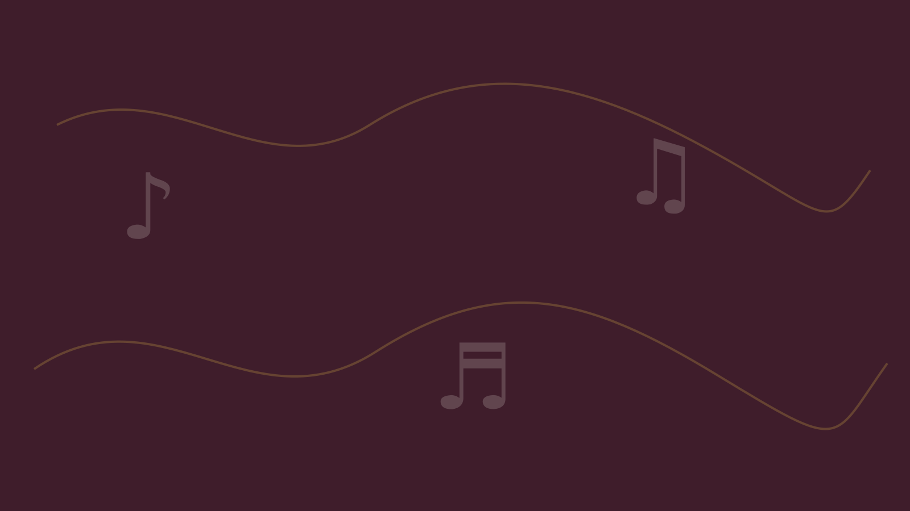

Community choral music since 1954
Ellwood City Area Civic Chorale
The Ellwood City Area Civic Chorale brings singers from Pennsylvania and Ohio together for seasonal concerts, community programs, and special performances.

Upcoming Concerts
See our Concerts page for upcoming performances.
Join Us
If you like to sing and wish to join the chorale, the holiday rehearsal season begins the first Sunday after Labor Day and the spring/summer rehearsal season begins the first Sunday after the New Year. Rehearsals are held Sunday evenings from 6:30pm until 8:30pm in the social hall of Trinity Lutheran Church, 207 Spring Avenue in Ellwood City.
A Brief History
The Ellwood City Area Civic Chorale was formed in 1954 by former students of the Ellwood City Lincoln High School choir who wanted to continue singing together. Approximately thirty singers from Pennsylvania and Ohio comprise the current chorale. The chorale presents two concert seasons each year: spring/summer and Christmas holiday. Programs typically include Broadway tunes, secular music, Gospel songs, and patriotic music. The group also performs for churches, retirement homes, community events, and special occasions.
The program includes this round chorale mark. This starter site includes a PNG version created from the printed program. It can be replaced later if a cleaner source logo becomes available.